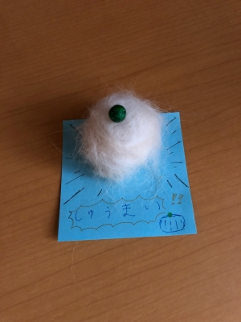

梅雨入りしたんじゃないの ?
この週末、ハルは静岡に日帰り遠征の予定で・・・。
先週はじめの天気予報では土曜日は雨で、
しかも週末前には梅雨入り宣言もあり・・・
天気予報が「くもりときどき雨」に変わっても絶対涼しいでしょ ?
と、想像しておりました。
そこでドライブがてらひまりさんも連れて出かけたところ
・・・なんでやねん。な暑さでしたね(汗)。
気温はそこまで高くなかったので、風が拭いて日陰にいれば
そこそこ涼しかったんですが・・・
ちょっとひまりさんにはかわいそうだったかもしれません。
でも新東名はSAにだいたいドッグランがあって、
最近のドライブは、わんこ連れにけっこう快適です。
↑
ノーリードでよそのわんこさんと遊んだのって
初めてじゃないかな ?
背中の毛がたてがみみたいに立ってます(笑)。
楽しかったみたいで、この後は車の中で爆睡してましたよ。
昨日は午前中いっぱいは雨だったので、
庭に出られたのは午後雨がやんでからで、
水で濡れた雑草の根っこをほりほりしたりしていたずらして(笑)
どろんこがついて汚れたし、だいぶわんこくさくもなって来たので
夕方シャンプーをしました。
ひまりさんに限らずと思いますが・・・
シャンプーの後はものすごく毛が抜けます。
私が風呂場からリビングに戻ると、ハルがひまりさんの抜け毛で
犬毛アートを作っておりました(笑)。
↓

しゅうまいだそーです(笑)。
「ひましゃんの毛はおいしいでしゅよ。」
(↑実際自分の毛を食べるヒト 笑)
わんこの毛でミニチュアの愛犬マスコットを作ったりしてるのを
見たことがありますが・・・上手にできたらかわいいだろうな〜と思います。
ちょっとやってみたい気持ちも分かります !
だって、ホントにセーターができそうな量の毛が抜けるんですから !
でも、実際に苦労して犬毛アートのかわいいミニチュアひましゃんを作っても
オリジナルひましゃんに「ばくっ」と食べられてしまうかも・・・(笑) ?